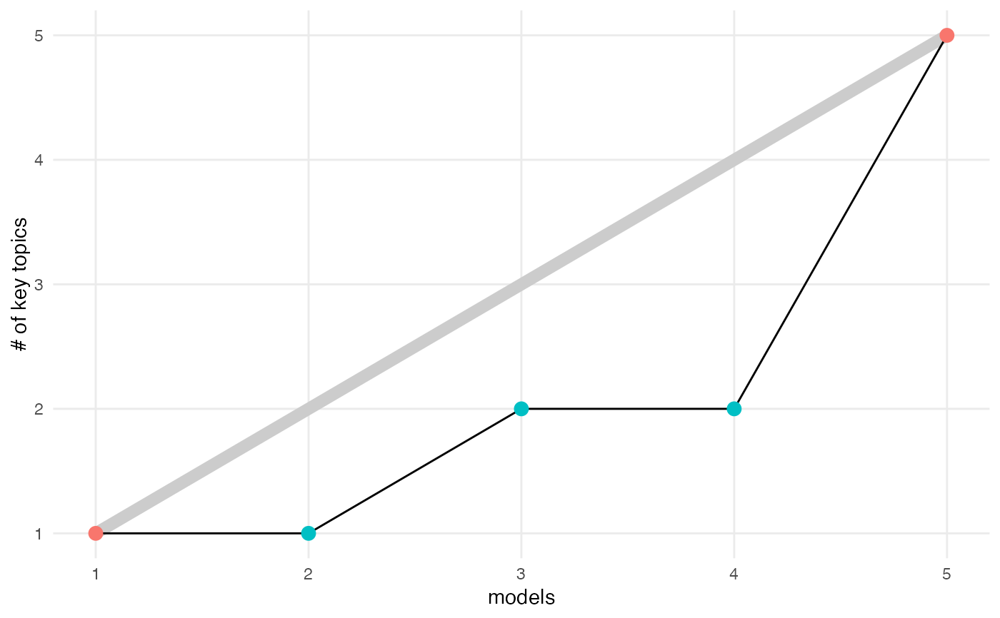

compute_number_of_key_topics.RdThis function computes the number of topics recursively in a backwards fashion. At the final level of the alignment, all topics are considered key topics. At intermediate levels, a topic is considered key if there is an edge leaving it such that the linked topic received most of its weight from this parent edge.
compute_number_of_key_topics(aligned_topics, plot = FALSE)
| aligned_topics | (required) An |
|---|---|
| plot | (optional, default = FALSE) whether to visualize the number of key topics. |
a data.frame with the number of key topic for each model. The
n_topics column shows the total possible number of topics available
for that model while n_key_topics gives the number that passed the key
topics criterion.
Given an alignment object, this function computes the number of key
topics at each level in the alignment. The result is a data.frame
mapping each level to a number from 1 to the number of current levels.
align_topics
library(purrr) data <- rmultinom(10, 20, rep(0.1, 20)) lda_params <- setNames(map(1:5, ~ list(k = .)), 1:5) lda_models <- run_lda_models(data, lda_params)#>#>#>#>#>#> # A tibble: 5 x 3 #> m n_key_topics n_topics #> <fct> <int> <int> #> 1 1 1 1 #> 2 2 1 2 #> 3 3 2 3 #> 4 4 2 4 #> 5 5 5 5